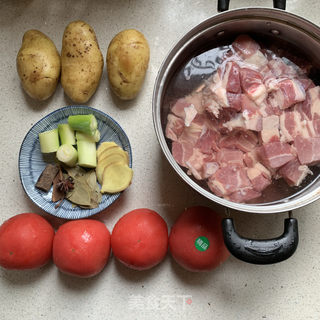

番茄土豆炖牛腩

食材明细
主料
牛腩
2斤
番茄
4个
土豆
3个
辅料
生姜
1-2片
香叶
1-2片
葱段
1-2片
配料
冰糖
10g
老抽
1勺
生抽
2勺
蚝油
1铲
糖
适量
料酒
少许
桂皮
少许
八角
少许
咸甜
口味
炖
工艺
一小时
耗时
普通
难度
番茄土豆炖牛腩的做法步骤
1
成品图。

2
材料备好，2斤牛腩很多了，某人的最爱。
3
牛腩冷水下锅，加姜片和料酒，煮开后撇去浮沫。
4
冲洗干净沥干水份，再把西红柿和土豆切小块。
5
冷油下冰糖，中火炒一下糖色（棕红色），再将牛腩倒入炒匀。
6
来一点老抽、生抽、蚝油。
7
下一半的西红柿翻炒几下，加热水沒过牛肉。
8
少许盐、糖调味。
9
大火烧开后转小火慢炖一小时。
10
牛肉软烂后倒入土豆块，煮十分钟左右。
11
加入剩余的番茄，继续煮几分钟就可以啦！
12
低脂又美味的西红柿土豆炖牛腩，汤汁浓郁❗️
小窍门
1、加水的时候最好一次性加到位，大火烧开后转小火慢炖60-70分钟就差不多了，也可以用高压锅。
2、西红柿可以多放，酸甜可口很好吃！先放一半西红柿是为了汤汁浓郁，后放一半是为了增加西红柿的口感！
使用的厨具：炒锅，炖锅
所属分类： 热菜 家常菜 下饭菜
风味人间CQ | ©版权所有
联系我们 | 邮箱:eotjs1433@163.com | 电话号码:18641267537